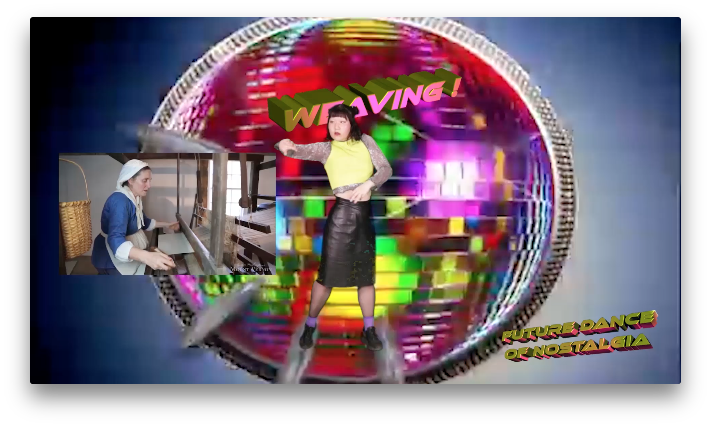
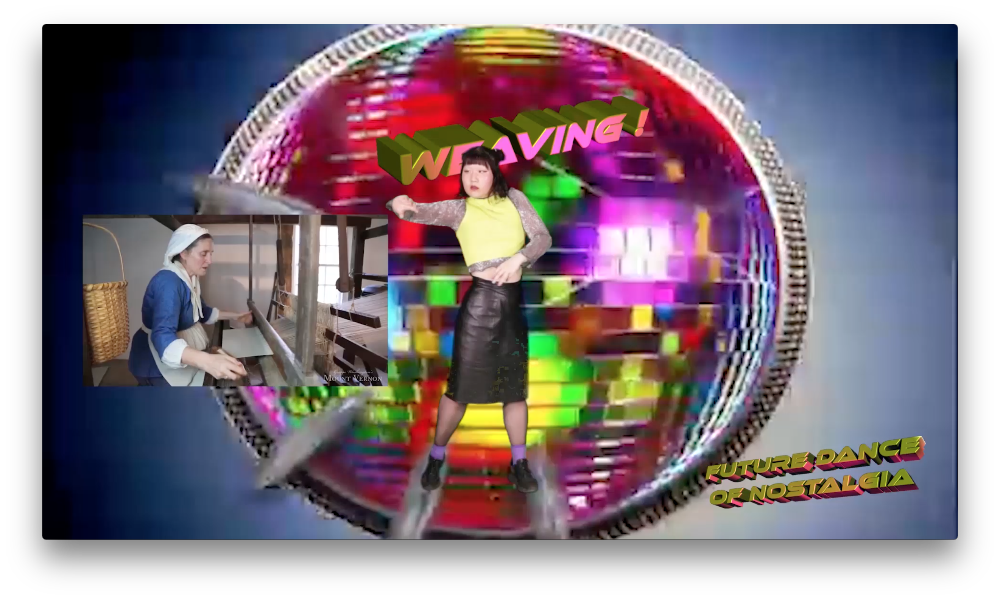

Future Dance of Nostalgia
I would like to look at these disappearing activities that are soon to be totally replaced by technologies and robots, with a retro-futuristic perspective, as well as a non-linear timeline: to jump to the future to look at the past. I would like to imagine a future where people feel nostalgic for the ancient manner of labor, and they invent dance movements that mimic the manner, yet totally detach the meaning from it.
Through an entertaining approach, this dance aims to help the preservation of ancient human knowledge that are embedded in the historical body and woven into our physical body memory.
This work was featured by plokta.nl in the live stream channel from 1st April to 5th April 2020. This work was presented at Stroboskop's online event July 2021.

 
